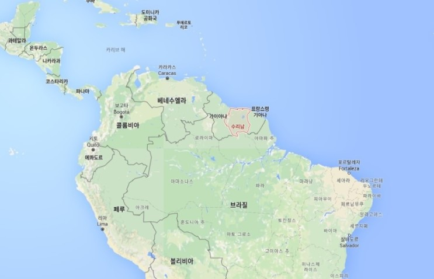

- 개요
- 자연
- 역사
수리남 위키백과
정식명칭은 수리남공화국(Republic of Suriname)이다. 남미 북부에 위치해 있으며 동쪽으로 프랑스령 기아나, 서쪽으로 가이아나, 남쪽으로 브라질과 국경을 접하고 있고, 북쪽으로는 대서양에 면한다. 한반도 면적의 약 3/4 크기로, 전국토의 90%가 원시자연림이며, 해안선을 따라 비옥한 연안평야가 펼쳐져 있다. 1975년 11월 네덜란드로부터 독립한 국가로, 공용어는 네덜란드어이다. 크리올(아프리카계 흑인을 말함), 인도파키스탄계, 인도네시아계, 부시니그로, 중국인, 아메리카인디언(원주민), 유럽계, 아랍계, 유대계 등 인종 구성이 매우 복잡하며, 27.4%의 인구가 힌두교를 믿어 아메리카 대륙에서는 유일하게 힌두교인이 많은 국가이다.
식민지 경제로 출발하여 쌀, 코코아, 커피 등 아열대 농산물을 재배하는 1차 산업에 경제를 의존해왔으나, 이후에는 보크사이트, 금, 니켈, 구리 등 광물자원산업에 전적으로 경제기반을 두고 있다. 수리남 연안에서는 원유 채굴 사업이 진행 중이다.
